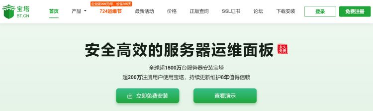

这几天搭建网站部署到服务器上时，发现很多相关教程都推荐了宝塔面板。宝塔面板是一款可以直观运维服务器的工具，当然不使用它你也可以自己对服务器进行运维--不过这对你的Linux操作要求较高。而宝塔面板以其上手容易、操作简单、安全系数高等优点，成为了当前国内最火的服务器运维面板。网上相关的教程已经非常完善，而且宝塔的相关界面也做的比较简洁易懂，非常适合像我这种建站新手尝试。贴个链接在这~
新手建站指南—宝塔面板的安装与使用教程(详细)_宝塔工作台在哪-CSDN博客
这个博主是用了Xshell来远程连接服务器，实际操作中也可以直接在你使用的云服务器厂商提供的服务器界面安装宝塔面板。非常简单，只需要一句代码即可。这里展示两个较为主流Linux发行版的安装命令：
Centos命令：
yum install -y wget && wget -O install.sh https://download.bt.cn/install/install_6.0.sh && sh install.sh
Ubuntu/Deepin命令：
wget -O install.sh https://download.bt.cn/install/install-ubuntu_6.0.sh && sudo bash install.sh
具体可以查看宝塔官方的安装文档：宝塔Linux面板安装教程 - 2024年7月16日更新 - 9.1.0正式版 - Linux面板 - 宝塔面板论坛 (bt.cn)
个人使用过程中，我觉得宝塔的可视化界面以及一整个的操作流程都是比较简洁的，服务器的管理界面也比较人性化，你可以在宝塔上传你自己准备好的网页文件，打开对应的站点就可以看到你自己的网站了。当然如果域名还未注册或是正在申请ICP备案的话，可以直接把你的云服务器的公网IP作为站点进行访问。当然这种做法不太安全，只适合在建站前期使用，等ICP备案完成之后肯定要换成域名进行访问。
再来讲讲自己在使用过程中遇到的一些奇怪问题。在通过将网页部署到服务器时，最开始时网页打开没有问题，随后当我优化了网页代码，想更新一下对应的css文件时，却发现网站的部分css样式缺失了。最开始我以为是IE浏览器的页面渲染问题，查询相关资料后加入了<meta http-equiv="X-UA-Compatible" content="IE=edge" >代码，但样式依然存在问题。于是我怀疑是浏览器缓存的问题，把缓存内容都删了一遍；之后离谱的来了：我把服务器上的所有的样式文件都删除，只留了一个index.html文件，结果它还是保留着之前的css样式！
百思不得其解，网上也找不到类似的问题，我甚至一度怀疑是自己的代码有问题，但是本地测试的时候完全正常啊！最后，我抱着试一试的心态重启了一下Nginx服务，结果成功了。具体原理目前也不清楚，我猜Nginx文件夹下的网页文件没删干净？如果有大佬能为我解答的话不胜感激。
总体而言，宝塔面板还是比较好用的，至少对于个人而言，他的这些免费功能绝对够用了。不过就是注册登录起来有点麻烦hhhh，你需要保存宝塔首页的一套账号密码，还有服务器面板登录时的一套账号密码，而且这个面板的密码只会在你安装完成之后显示一次！务必要保存下来哦！